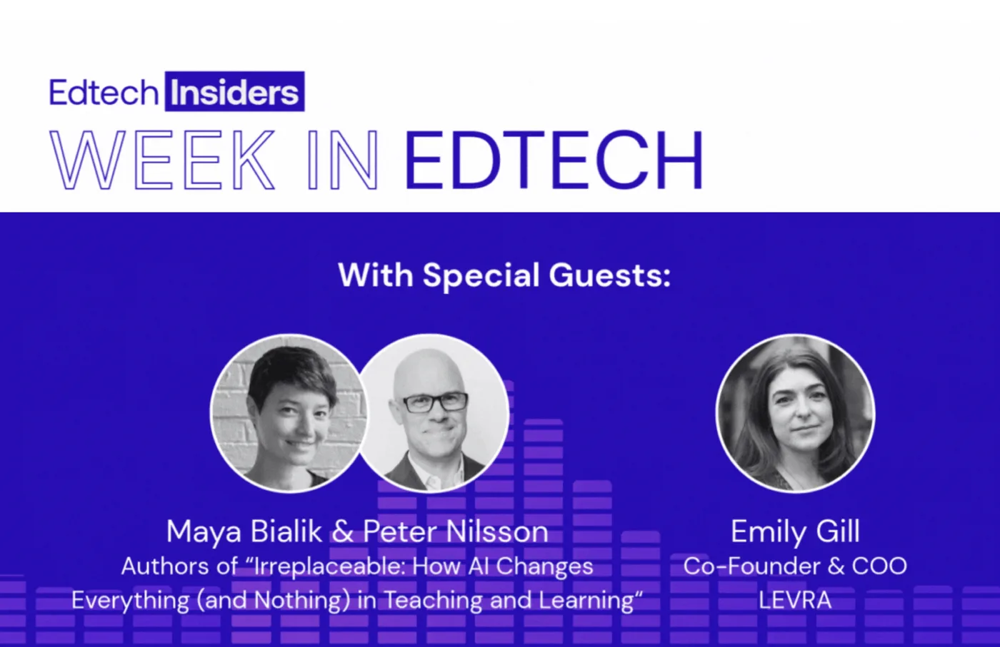
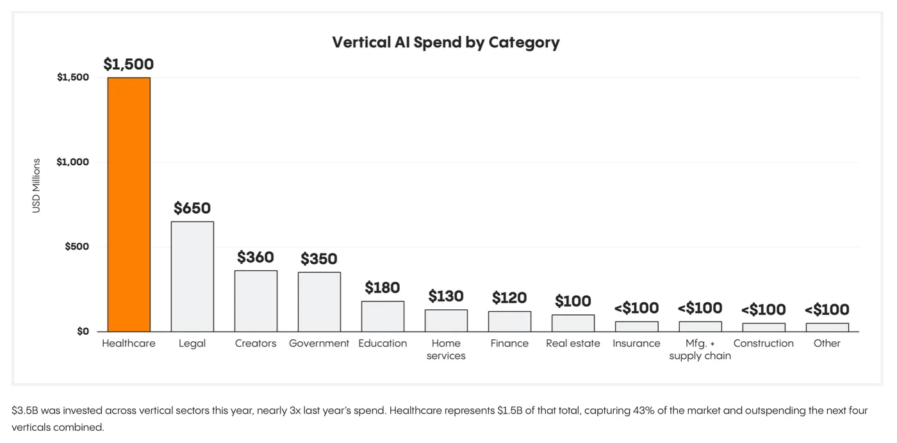

Thick Desires Vs Thin Desires
“A thick desire is one that changes you in the process of pursuing it. A thin desire is one that doesn’t."
A weekly collection of education-related news from around the web.
← Previous Issue · Next Issue →
An epic issue to start the year – three notes to kick it off:
* The book is out in less than two weeks! Find out what Howard Gardner, Maha Bali, and Charles Fadel have to say about it.
* This issue has a great selection from December to start your year off
* Where to find me in the next few months
The Book
Obviously, the anticipation of the release is excruciating, especially since early feedback captures exactly what we’d hoped: it’s a book grounded in learning first and foremost, and it welcomes multiple perspectives into conversation about learning in a time of AI — not just now, but in the years to come.
* Maha Bali writes, “It is so rare to find a book on AI in education that is neither uncritically enthusiastic nor completely resistant, but one that makes space for readers who have diverse value systems and philosophies of education.”
* Howard Gardner agrees, calling it “a thoughtful and balanced perspective on AI in education.”
* Charles Fadel writes, “AI is moving much faster than the education sector, making it hard for an author to provide advice that will withstand the test of the next five years’ worth of technological progress. Yet Bialik and Nilsson have achieved this tour de force, with a book full of timely, critical, and enduring advice for teachers.”
For an overview of what’s inside, our conversation on the EdTech Insiders podcast offers an excellent entry into some of the key ideas in the book. Take a listen here at the 46:00 mark for more on how leaders and teachers can organize their thinking about AI, how we can lower the temperature of discussions around AI, and more. You can pre-order copies on Amazon or from Solution Tree directly. If you are looking for a summer read for your faculty to think intentionally about AI, this book might be a good fit for you and your school.
Last, over the past two years, I’ve worked with dozens of schools facilitating sessions for teachers, school leaders, and boards on topics related to AI. If you are looking for guidance on AI — for leaders, teachers, or boards — don’t hesitate to reach out.
This Week’s Issue
The features this week dig into the nuts and bolts and analog experience of teaching and learning. In one feature, look closely at how to write clearly defined standards for our classrooms. Clearly knowing why we are teaching what we are teaching is growing increasingly important in our AI age. The practice of writing standards or objectives or goals helps us achieve this focus as educators. In the other feature, enjoy Joan Westenberg’s short meditation on “thick desires” vs “thin desires.” These classifications help us see if the things we crave change us or simply occupy us. This is especially important in a time of digital dopamine hits.
Also this week: end of year reflections include retrospectives on adolescents and technology use, a series of excellent posts on character, a full section on learning science, Australia’s social media law taking effect, and some writing about the passing of Tom Stoppard.
These and more in our New Year, enjoy!
Peter
PS. Where you can find me in the next few months:
* January 13 – FETC (Orlando, FL) — “How to Leverage AI + Learning Science for More Human, Passionate Teaching” — Maya and I will be examining insight from learning science into how AI can support more human-centered work for teachers.
* January 16 — Book release! — I can hardly believe it’s so close. There’s a gaping canyon between when you send the final manuscript to the publisher and when the print copies come out. Thank goodness I’ve been pre-occupied over the holidays.
* February 18 — NAIS Webinar (online, member schools) — “Assessment in the Time of AI” — Join us as we explore setting and communicating AI use guidelines, as well as new frames for thinking about assessment and learning design.
* February 25-27 – NAIS (Seattle, WA) — “Getting to Why with AI: Supporting and Empowering Teachers in Changing Times” — Explore with us how competing teaching philosophies are crowding out clear thinking about AI (and how to clarify them in your community), how changes in student capabilities are prompting the need for new skills and literacies, and how the arrival AI is actually helping us identify — and therefore affirm and strengthen — what forms the heart of our human experience. This session is a Master Class in the conference that requires additional registration.
March 9-12 – SXSW EDU (Austin, TX) — “Schooled the Musical” — Yes, snuck in the middle of the all the AI work is a staged reading of the full length musical I’m developing. With a Hamilton meets The Sound of Music meets Good Night and Good Luck story, it follows the lives of three students as they discover what they can and cannot learn in school. Written in both contemporary and classical styles, this developmental performance will be directed by an alum from Disney’s Aladdin* on Broadway and will include an extraordinarily talented young cast.
* March 18 — NAIS Webinar (online, member schools) — “What’s New in AI for Schools” — Here we’re looking beyond immediate concerns about AI to forward-looking questions about AI companions, anticipated developments in AI tutoring, and other emerging technology trends. Join for insights into how this technology is likely to change adolescence and learning in the years ahead.

“A thick desire is one that changes you in the process of pursuing it. A thin desire is one that doesn’t."
“Having clearly defined standards is the first of the Four Pillars of Alternative Grading, and in my view it’s the “floor” on which the other pillars stand… First, a review: Let’s recap a few things that have been said here before, starting with the definition of a “standard”. A standard is a clear and observable description of an action that a student can take to demonstrate their learning of some specific topic.”
““Humans and AI working together — that is the key right now. Every step along the way can be greatly improved: transcript reading, essay reviews, telling us things we might be missing about the students,” said Pacheco, a former assistant director of admission at Loyola University Chicago. “Ten years from now, all bets are off. I’m guessing AI will be admitting students.””
“Civil War-era hand-clapping songs (“Miss Susie had a steamboat,” etc.), Gen-Xers’ graffiti-filled notebooks, and yes, six-seven shrugs in 2025 all fall into a part of children’s culture known as childlore. Childlore is a distinctive genre that includes all the games, rituals, stories, and other activities passed from child to child in playgrounds, classrooms, and now, in the 21st century, via social media.”
“The experience of school has changed rapidly in recent generations. Starting in the 1980s, a metrics-obsessed regime took over American education and profoundly altered the expectations placed on children, up and down the class ladder. In fact, it has altered the experience of childhood itself… “What’s happening is, instead of saying, ‘We need to fix the schools,’ the message is, ‘We need to fix the kids,’” said Peter Gray, a research professor at Boston College.”
“The students were broadly receiving good grades, too: More than a quarter of the students needing remedial math had a 4.0 grade point average in math. The average was 3.7. In fact, the report found that on average, student grades in 2025 rose compared to those of students admitted in 2020. Instead, here is the absurd image that the report slowly and painstakingly paints: A number of high schools are awarding A grades to AP Calculus students who do not have any calculus skills and who would get the lowest possible score on the AP Calculus exam if they took it.”
“It turns out that happiness can be grouped into two main categories, and the concept goes back to ancient Greece. One kind is called eudaemonic well-being, which you might think of as having meaning and purpose in your life. The other is called hedonic well-being, which means feeling pleasure and avoiding pain. Both, researchers say, are important in order to thrive.”
“Before we turn the calendar page, take a moment to test your knowledge of the often absurd, sometimes funny, rude or useful words that helped define 2025.”
“School may need two separate documents: An Operational Imperative Plan that lays out the work needed to maintain institutional health, improve existing programs, upgrade facilities, and strengthen operational capabilities. This is essential work and deserves serious attention and resources. A Strategic Positioning Plan that articulates the school's distinctive choices about future direction, makes explicit hypotheses about how education needs to evolve, and commits to specific positioning relative to other educational options. The first document is about maintaining table stakes. The second focuses on creating advantage.”
….even when that month spans a holiday (or two)…
In the features, find two excellent pieces about the adolescent experience, including one with advice to adolescents about engaging with AI today. Also in the features (four total!), find two reports from major labs with insight into how people are using AI in the workplace and for personal purposes. These offer helpful insight into the extraordinary speed with which AI has entered our lives.
Also in this issue, find a wealth of articles with new ways AI is serving schools: from a professor’s use of AI to make a visualization of his syllabus to the prospect of on-demand tools and simulations to dialogue-based techniques that focus student attention on oral participation.
Also, the self-driving taxi race is heating up. (Well, not a driving race… they drive very cautiously — more safely than humans, in fact.). Look also at how AI is playing a role in more and more workplaces.
These and more, enjoy!
Peter

“Here’s what I want you to take away: uncertainty isn’t the same as helplessness. You don’t need to predict the future to prepare for it. The people who thrive in moments like this aren’t the ones who guessed right about which industries would boom—they’re the ones who built the capacity to adapt, to learn, to push through hard things, and to work with others.”
“I suspect many high school students simply ask the first question when determining the calculus of AI use: Will I get caught? It’s heartening to know others are weighing the more critical question: Will I learn? Both are operating rationally within a decision making framework, but only one produces the outcome educators want. It’s clear that neither approach has much to do with school policy. The first student has already concluded AI policies are rarely an effective deterrent - the odds of getting caught are so low it’s worth the risk. The second has internalized reasons that have nothing to do with the actual rules. What both positions lack is any semblance of adult guidance. Students are primarily making these choices on their own.”
“An A.I.-resistant English course has three main elements: pen-and-paper and oral testing; teaching the process of writing rather than just assigning papers; and greater emphasis on what happens in the classroom. Such a course, which can’t be A.I.-proof because that would mean students do no writing or reading except under a teacher’s direct supervision, also obliges us to make the case to students that it’s in their self-interest to do their own work.”
“What I observed across multiple rounds Saturday was striking sameness. Almost all the arguments were identical - the same three points on each side, the same evidence cited, the same structure - because it was all being drawn from the same pool of training data. Having judged hundreds of rounds over the years, I’m used to encountering a wide range of arguments, including creative approaches that surprise me. That variability was largely absent. Everyone had conformed to some median, and that median was obviously AI-generated. I judged four rounds on two motions and saw schools use largely the same cases for each. The variety and creativity simply weren’t there.”
“Stop designing as if AI use is optional. Learners are already integrating AI into their learning workflows. Designing as if they aren’t creates friction, not integrity. The question isn’t whether they’ll use AI—it’s whether our designs acknowledge and work with that reality, or whether we force them to work around us.”
“Another example is that many teachers have declared they will never use AI for assessment because it’s central to their relationship with students. That’s a valid value. But it collapses all assessment into one category. Formative feedback—comments on a draft, a quick check on whether a student grasps a concept—has different goals than summative evaluation. Formative feedback benefits from speed and frequency. A student revising an essay learns more when they get responses in ten minutes instead of ten days. It’s especially important when a student is practicing outside the classroom, when the teacher isn’t available. The teacher’s distinctive voice and judgment matter most in summative moments.
“This recognition demands a different approach to AI in education. We cannot rely on the technology becoming unavailable or prohibitively difficult to access. We cannot depend on content filtering or detection tools to identify AI-generated work when students can run unfiltered models locally. And we particularly cannot assume that limiting school access to commercial AI services meaningfully restricts students’ capabilities. What we can do is engage honestly with the technology’s actual capabilities and limitations. We can design learning experiences that value process over product, making AI-generated final outputs insufficient for demonstrating learning. We can teach critical evaluation skills that apply equally to AI and human-generated content. And we can model thoughtful tool use that augments rather than replaces human thinking.”
“Such weddings are not legally recognised in Japan, but data suggests more such unions could be in the offing. In a survey of 1,000 people this year, a chatbot was a more popular choice than best friends or mothers, when respondents were asked whom they could share their feelings with. The survey allowed respondents to choose more than one option.”
“Anthropic had tested a vending machine powered by its Claude AI model in its own offices and asked whether we’d like to be the first outsiders to try a newer, supposedly smarter version. Claudius, the customized version of the model, would run the machine: ordering inventory, setting prices and responding to customers—aka my fellow newsroom journalists—via workplace chat app Slack. “Sure!” I said. It sounded fun. If nothing else, snacks! Then came the chaos.”
“Waymo keeps eating market share in every market it enters, and it does so pretty fast. I expect that initial adoption will accelerate over time when they enter new markets, as their brand and safety reputation will precede them.”
“Amanda Askell, Anthropic’s lead of model behavior, says pattern-recognition bots “have a better model of what it is to be a human than what it is to be a tool.””